ISBN не е база на податоци
Зошто ISBN помага во идентификување на книгите, но не ги заменува метаподаточните системи, и како функционира синџирот за пребарување метаподатоци во проектот Let Books.
Кога ќе земете во раце печатена книга, баркодот на задната корица е највидливиот идентификатор што го носи. Тој идентификатор е ISBN — меѓународен стандарден книжен број. Во библиотечните каталози, интернет продавниците и метаподаточните системи често делува како клуч на база на податоци. Но ISBN не е база на податоци и третирањето како таква води до вистински проблеми во донирањето книги.
Што е ISBN всушност
ISBN е единствен идентификатор доделен на одредено издание на објавена книга. Сегашниот стандард, ISBN-13, користи 13 цифри со контролна цифра за откривање грешки. Постариот формат ISBN-10 сè уште се наоѓа на книги објавени пред 2007 година.
ISBN го идентификува изданието, а не делото. На пример, второто и третото издание на истиот учебник имаат различни ISBN-броеви. Тврдиот и мекиот повез на истата книга имаат различни ISBN-броеви. Англискиот превод и оригиналното француско издание имаат различни ISBN-броеви.
Ова е корисна прецизност — но носи важни ограничувања.

ISBN ги идентификува метаподатоците на изданието од левата страна. Физичкиот примерок од десната страна — состојба, провениенција, локација на складирање, статус на донација, фотографии — се води одделно во доменскиот модел на Let Books. Двете се поврзани, но не се иста работа.
Што ISBN не може
Не секоја книга го има
Книгите објавени пред 1970 година, самостојните публикации, академските материјали од ограничени тиражи и книгите од помали издавачи често воопшто немаат ISBN. Во академските наследни збирки — на кои се фокусира овој проект — учебниците од пред 1970 година, предавањата и локално печатените материјали се вообичаени и вредни.
ISBN не ја опишува состојбата
Библиотеката сака да знае дали примерокот е оштетен од вода, дали има белешки или дали му недостасуваат страници. ISBN не дава ниту една од овие информации. Идентификаторот е ист за беспрекорен примерок и за оној што дваесет години лежел во влажен подрум.
ISBN не ја опишува провениенцијата
Чиј примерок е ова? Дали го препорачал професор? Има ли потпис од претходен сопственик или библиотечен печат? Која институција го поседувала? ISBN молчи за сето ова.
ISBN не ја опишува локацијата
За проект за донирање книги, второто најважно прашање по “што е?” е “каде е?”. ISBN нема одговор на тоа. Локацијата е логистички податок што се води одделно во хиерархијата на складишни места.
ISBN може да биде погрешен или повторно употребен
Постојат погрешно отпечатени ISBN-броеви. Истиот ISBN може случајно да го користат различни издавачи. Оптичкото читање може погрешно да ги прочита цифрите. Контролната цифра открива грешки во една цифра, но не сите.
Како Let Books постапува со ISBN
docs/book-metadata.md дефинира практична стратегија за резервен тек при пребарување по ISBN. Документот исто така наведува дека овој тек работи во тековното алфа демо, а воедно служи и како образец за идната целосна апликација:

- Нормализирај и потврди го ISBN-от. Отстрани празни места и цртички, X претвори во голема буква, провери ја контролната цифра.
- Прво пребарај го Open Library преку нивниот јавен API.
- Ако Open Library не врати корисни податоци, пребарај го Let Books метаподаточниот API.
- Ако ниту еден провајдер нема податоци, потпри се на рачен внес.
Рачниот внес никогаш не е блокиран. Ако сите провајдери откажат — било поради мрежна грешка, ограничување на брзината или вистинска отсуство на податоци — корисникот може рачно да ги внесе насловот, авторот, издавачот и годината и да продолжи со каталогизацијата.
Синџирот на опаѓање намерно е едноставен. Не постои единствена точка на отказ бидејќи ниту еден провајдер не е задолжителен. Секој провајдер е изборен и независно заменлив.
Канонските референци во складиштето за овој синџир се docs/book-metadata.md и AGENTS.md. Ако одредено демо или конкретна верзија на апликацијата веќе имплементира дел од овој тек, наведете го тоа само како статус на имплементација, а не како главен доказ.
Зошто ова е важно за донирање книги
Кога даривачот каталогизира збирка академски книги, некои ќе имаат ISBN, а некои нема. Книгите без ISBN често се најинтересни — постари изданија, локално објавени материјали, компилации за одредени предмети или книги од издавачи од поранешна Југославија чии идентификатори никогаш не стигнале до глобалните бази на податоци.
Процесот на каталогизација не смее да го казнува даривачот за недостаток на ISBN-броеви. Секоја функција што работи со ISBN мора да работи и без него: следење локација, поставување фотографии, извоз во Excel, групен преглед. ISBN е помагало, а не барање.
Проектна спецификација, AGENTS.md: “Моделот мора да дозволува нецелосни податоци. ISBN не е задолжителен.”
Што носи иднината
Тековниот синџир на опаѓање ќе се прошири со нови провајдери. Crossref, Wikidata, OpenAlex и COBISS се кандидати. Секој ќе влезе во истиот синџир: обиди се по редослед, агресивно кеширај, елегантно откажи.
Но синџирот сам по себе не е цел. Целта е да се стигне од физичка книга до доволно метаподатоци за библиотеката да може да одлучи дали ја сака книгата. ISBN помага, но системот мора да работи и кога ISBN не е достапен.
ISBN е корисен идентификатор. Не е база на податоци.